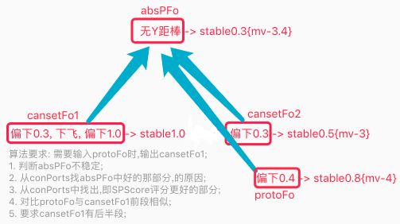
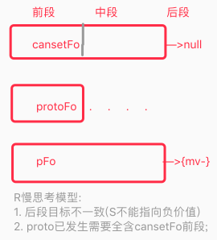
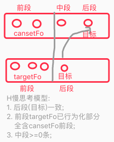

AI系列之《2022.05-06：快慢思考与 S 综合排名》

来源：HELIX_THEORY/手稿/assets/620_Solution算法迭代方案模型图.png

来源：HELIX_THEORY/手稿/assets/624_R慢思考模型.png

来源：HELIX_THEORY/手稿/assets/625_H慢思考模型.png
来源：Note26.md
5 到 6 月的主题非常集中：逐层宽入窄出、快慢思考、S 有效率、整体观、预测验证、S 综合排名和 Analyst。
“宽入窄出”把候选生成和候选筛选明确区分开：前面尽量开放，后面逐层收束。快慢思考则把即时反应与深层评估拆开，让系统可以在时间压力下快速行动，也可以在复杂场景下放慢推理。
S 综合排名是这一阶段的重要收束。它把解决方案候选从“有没有”推进到“哪个更好”。Analyst 的出现，意味着系统需要一个专门的分析视角，去解释为什么某个候选更值得执行。
阶段意义：决策从可执行走向可比较，思考从单节奏走向快慢协同。